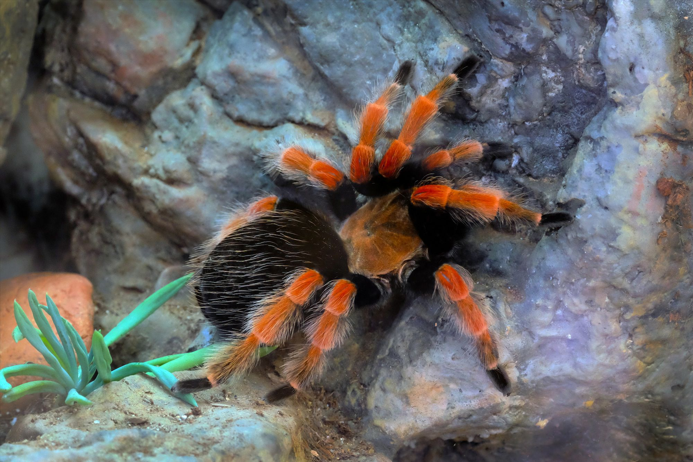
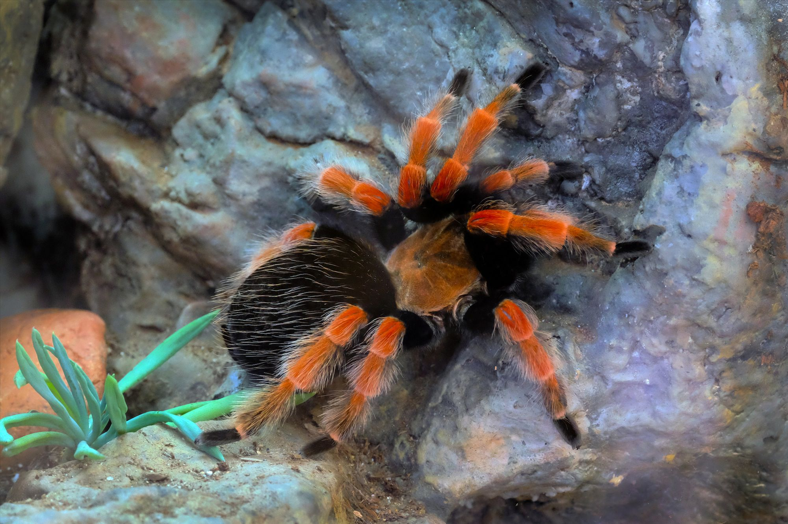
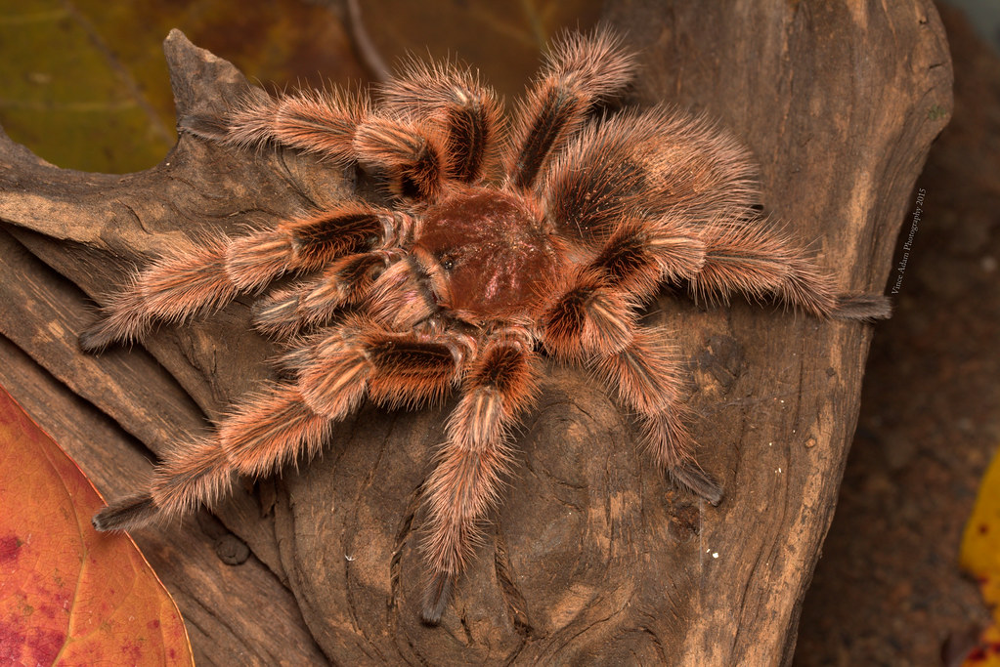
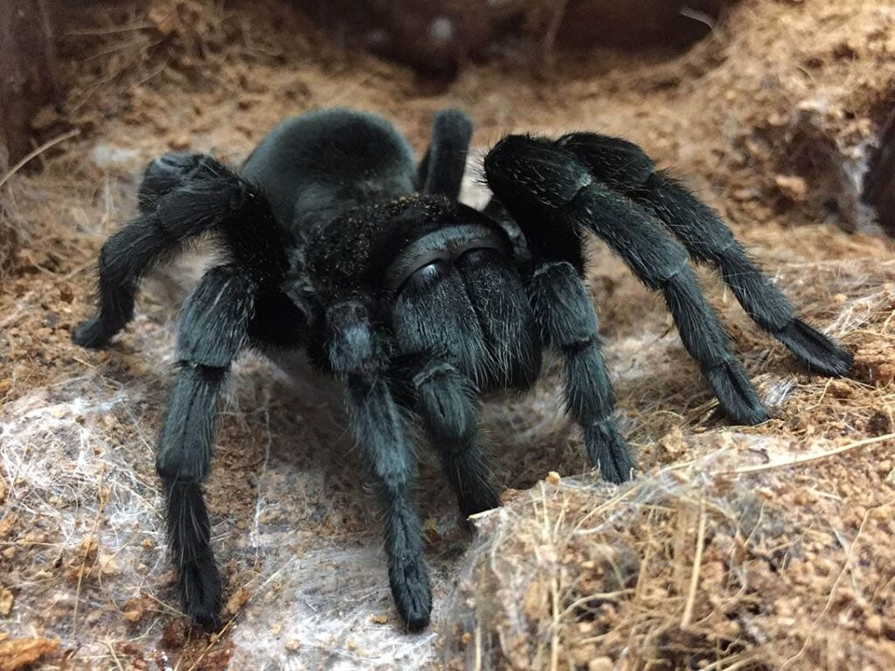

Tarantlid koduloomaks - miks ka mitte!
Tagasi
Oled plaaninud võtta tarantli endale koduloomaks? Sellel lehel on kolm erinevat tarantli liiki, mis on hea alustus algajataele.
Mexican Red-Knee (Mehhiko Punapõlv):
 


- Oodatav eluiga - Emastel ~30a // Isastel ~10a.
- Temperament - Aeglaselt liikuv ja reeglina väga rahulik liik.
- Suurus - 12-15 cm
- Elukoha tingimused/Terraarium - Vähemalt 60x35x30 plast- või klaasterraarium, millel on ventilatsiooniga turvaline kate. Ideaalis peaks temperatuur olema 23-26°C. Substraadina kasutada turbamulda. Terraariumisse võiks lisada puukoori varjuks, savipotte ja võltstaimi, et jäljendada looduslikku keskkonda.
- Toitumine - Sööta tuleks neid 1-2 korda nädalas. Nad söövad asju nagu: ritsikad, prussakad, putukad, jahuussid. Joogiks peaks olema vesi kogu aeg kättesaadav.
- Käsitsemine - Ei vaja sotsialiseerumist, kuigi võib õrnalt käsitseda. Käsitsemisseansid tuleks hoida lühikesed, et vältida üleliigset stressi.
Chilean Rose Hair (Tšiili kibuvitsa tarantel):



- Oodatav eluiga - Emastel ~25a // Isastel ~6a
- Temperament - Neid peetakse rahulikeks, kes liiguvad üsna aegalselt ja ei kipu hammustama. Seetõttu on nad ka üks populaarsemaid liike lemmikloomakaubanduses.
- Suurus - 12-13 cm
- Elukoha tingimused/Terraarium - 50x25x25 mõõtudes klaasterraarium koos kattega ja hea ventilatsioobiga peaks olema sobilik, piisavalt suur, et neil oleks võimalus ringi liikuda. Temperatuur peaks olema vahemikus 22-23°C. Substraadina sobib turbasammal, kemikaalivaba muld ja hakitud kookospähli koort. Terraarium peaks sisaldama peidukohta, mis on õõnsast palgist või puhtast triivpuutükist. Kunsttaimed või elusad taimed, et jäljendada looduslikku keskkonda.
- Toitumine - Söövad 1-2 korda nädalas. Peamine toiduallikas on ritsikad.
- Käsitsemine - Õrnalt käsitsemine on sobilik, kuigi nad ei hammusta tavaliselt, peab olema ettevaatlik, sest nende hammustus on mürgine.
Brazilian Black (Brasiilia Must Tarantel):



- Oodatav eluiga - Emastel ~18a // Isastel ~10a
- Temperament - Rahulikud ja aeglaselt liikuvad. Suurepärased omanikele, kes otsustavad tarantleid käsitseda.
- Suurus - Kuni 18 cm
- Elukoha tingimused/Terraarium - 50x25x25 klaas- või plastterraarium koos hea ventilatsiooniga (elukoha külgedel olevad augud). Temperatuuriks sobib vahemikus 23-29°C. Substraadina kasutada kemikaalivaba mulda või jahvatatud kookoskiudu. Peidukohtade tegemine on tarantli heaolu jaoks oluline. Terraariumisse panna võltstaimi või elusaid taimi ning puutükke.
- Toitumine - Söövad 1-2 korda nädalas. Brasiilia must tarantel on entusiastlik sööja ja võtab kõik kättesaadava omale saagiks. Peamised toiduallikad on elus ritsikad, jahuussid, dubia särg.
- Käsitsemine - Kuigi nad on rahulikud, peab käsitsemise ajal ikka ettevaatlik olema. Mitte hoida neid lähedal oma näole.